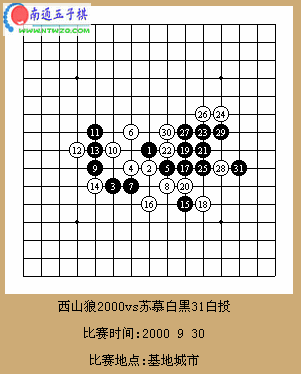
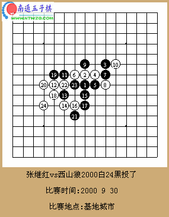
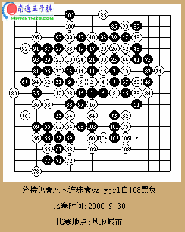

首届南北擂台赛对局讲评
#1 首届南北擂台赛对局讲评 作者：有志青年 发表时间：2006-12-14 12:49:04
西山狼2000vs苏慕白已以疏星开局黑9变着,这是世界冠军爱莎尼亚的麦力德曾先走出的变化,经研究白10走7下防住斜2黑胜困难,11,12交换,白有抓黑三三禁的想法,14唯一防,15,17好棋!18疑问,若走20位如何?以下黑棋狂攻,白24,26唯一防,行至黑31,双杀!北方队首轮获胜!

南方队的张继红攻擂,再次疏星开局,前16手为定式,黑17着急!白18摆出要强攻的架势,黑19有问题,防20位是否强些?白20后必胜!实战白24黑投了!到此北方队的西山狼2000连克南方队两员大将,只可惜西山狼2000中途掉网第三轮判弃权,南方队分特兔 ★ 水木连珠 ★ 不战而胜!

四轮北方队的yjrl挑战南方队分特兔 ★ 水木连珠 ★ ,双方再次疏星开局,看来疏星是最平衡的开局!前12手为定式,13做棋,14强防,15走的有些弱,16后黑棋难下,但黑17,19咄咄逼人,意料之外,白20最强防,21展开进攻,22唯一防,若防中间,黑走23,79,40胜!实战22好棋!双方行至27后趋向于和棋,但由于分特兔 ★ 水木连珠 ★ 在读秒阶段99出现失误,若黑后几手先防一防右下方必和!

转载自：http://www.shwzq.com/online/ShowArticle.asp?ArticleID=1007